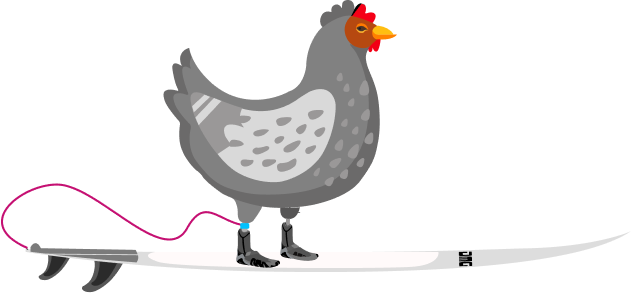

Education
- Master of User Experience Design, Victoria University of Wellington
- Introduction to Digital Accessibility micro-credential
- Codecademy certificate in HTML, CSS, and JavaScript
About
Work at Victoria University of Wellington, New Zealand Customs, and freelance UX/UI projects shaped how I approach design: practical, human, and grounded in clarity.

My design journey has been demanding, non-linear, and worthwhile. I’m proud to contribute to New Zealand’s digital design scene while continuing to build from a broad professional background.
That mix of experience helps me move between research, interface design, content structure, stakeholder communication, and implementation detail without losing the thread.
Education & skills
Experience
New Zealand Customs Service • November 2022 to present
Various companies in New Zealand and overseas • August 2022 to October 2022
Ministry of Education, Wellington • May 2021 to July 2021
DoubleTree by Hilton, Wellington • February 2020 to May 2021
Bolton and Sofitel Hotel, Wellington • May 2015 to January 2020
Boxed s.r.o., Prague • January 2013 to April 2015